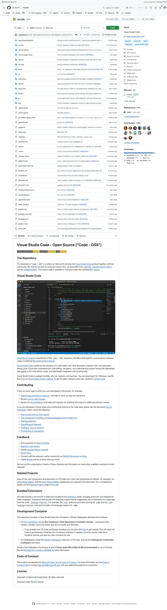
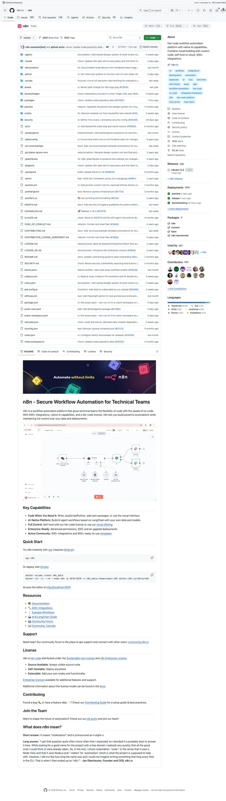
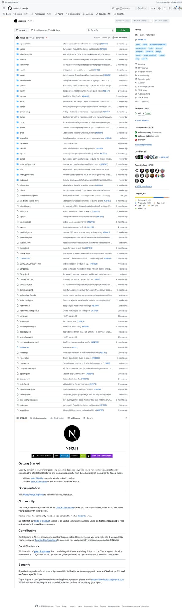
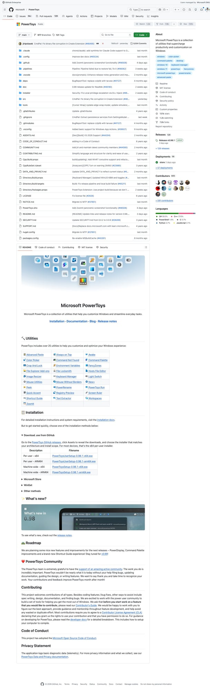
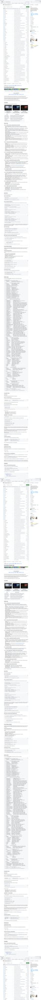

5个Agent Skills新星速报！VSCode Sessions、React Vendoring、持续学习系统等热门技能
Neo整理
Agent Skills 是 AI 编程助手（Claude Code、Codex、Gemini CLI 等）的可复用能力模块。今天我扫描了 SkillsMP 等平台，筛选出来自知名开源项目、实用价值高的热门 Skills。
本期介绍 5 个精选 Skills，涵盖 VSCode 架构、React 内部机制、自动化工作流、WPF 迁移和 AI 持续学习系统。
Sessions：VSCode Agent Sessions 窗口架构
Sessions Skill 是 Microsoft VSCode 团队的内部开发指南，详细说明了 Agent Sessions 窗口的架构设计。VSCode 正在从"编辑器优先"转变为"对话优先"的 UI 架构，这个 Skill 是理解这一转变的关键。
💡 核心价值：理解 VSCode 如何构建 Agent Sessions 窗口 — Chat Bar 成为主要组件，编辑器变成模态叠加层。分层架构确保 vs/sessions 与 vs/workbench 清晰分离。
架构要点：
- 分层约束 —
vs/sessions可导入vs/workbench，但反向禁止 - 简化 Chrome — 无活动栏、状态栏、横幅，聚焦对话体验
- 固定布局 — 不支持设置自定义，保持一致体验
- 规范文档 — README.md、LAYOUT.md、AI_CUSTOMIZATIONS.md、AGENTS_CHAT_WIDGET.md
# 规范文档位置
src/vs/sessions/README.md # 分层规则
src/vs/sessions/LAYOUT.md # 网格结构、CSS 类
src/vs/sessions/AI_CUSTOMIZATIONS.md # AI 自定义
src/vs/sessions/browser/widget/AGENTS_CHAT_WIDGET.md # Chat Widget
# 验证分层
npm run valid-layers-check
n8n Conventions：自动化工作流开发规范
n8n Conventions Skill 是 n8n 自动化平台的开发速查卡。n8n 是 Zapier/Make 的开源替代品，拥有 900+ 集成和 AI Agent 工作流能力。这个 Skill 帮助 AI 编程助手快速了解 n8n 的代码规范和最佳实践。
💡 核心价值：在 AI 编程助手中快速查阅 n8n 的 TypeScript 规范、错误处理、前后端架构。让 AI 生成的代码符合项目规范。
关键规则：
- TypeScript — 禁止
any，用unknown；优先satisfies而非as - 错误处理 — 使用
UnexpectedError，不用废弃的ApplicationError - 前端 — Vue 3 Composition API + Pinia Store + CSS 变量 + i18n
- 后端 — Controller → Service → Repository，依赖注入 via
@n8n/di - 数据库 — 仅 SQLite/PostgreSQL（应用数据库）
# 错误处理示例
import { UnexpectedError } from 'n8n-workflow';
throw new UnexpectedError('message', { extra: { context } });
# 测试命令
pushd packages/cli && pnpm test
# Pinia Store 模式
import { STORES } from '@n8n/stores';
export const useMyStore = defineStore(STORES.MY_STORE, () => {
const state = shallowRef([]);
return { state };
});
React Vendoring：Next.js 的 React 内部打包机制
React Vendoring Skill 揭示了 Next.js 如何在内部管理 React 依赖。App Router 不从 node_modules 解析 React，而是在构建时将其打包到 compiled/ 目录。这个 Skill 是深入 Next.js 内部的必备知识。
💡 核心价值：理解 entry-base.ts 边界 — 所有 react-server-dom-webpack/* 导入必须通过它。直接导入会在生产环境失败，开发模式可能掩盖错误。
核心概念：
- 双通道 — stable (
compiled/react/) 和 experimental (compiled/react-experimental/) - entry-base.ts 边界 — 唯一在 rspack
(react-server)层编译的文件 - ComponentMod 模式 — 其他文件通过 ComponentMod 参数访问 Flight API
- 类型声明 —
$$compiled.internal.d.ts包含所有 vendored React 包的类型
# entry-base.ts 中导出 React API（react-server 层）
/* eslint-disable import/no-extraneous-dependencies */
export let renderToPipeableStream: ... | undefined
if (process.env.__NEXT_USE_NODE_STREAMS) {
renderToPipeableStream = (
require('react-server-dom-webpack/server.node')
).renderToPipeableStream
}
/* eslint-enable import/no-extraneous-dependencies */
# 其他文件通过 ComponentMod 访问：
ComponentMod.renderToPipeableStream!(payload, clientModules, opts)
WPF to WinUI 3 Migration：PowerToys 模块迁移指南
WPF to WinUI 3 Migration Skill 是 PowerToys 团队基于 ImageResizer 模块迁移经验总结的实战指南。从项目文件到安装器的完整 11 步迁移策略，帮助 AI 助手高效执行 WPF → WinUI 3 的代码转换。
💡 核心价值：完整的命名空间映射表 + API 替换对照表 + 迁移顺序建议。避免常见陷阱：不要覆盖 App.xaml，不要创建 Exe→WinExe 的 ProjectReference。
迁移策略（推荐顺序）：
- 1-3 — 项目文件 → 数据模型 → MVVM 框架（CommunityToolkit.Mvvm）
- 4-6 — 资源字符串（.resx→.resw）→ 服务层 → ViewModel
- 7-9 — Views/Pages → 主页面/Shell → App.xaml（合并，勿覆盖！）
- 10-11 — 安装器 & 构建管道 → 测试
# 关键命名空间映射
System.Windows → Microsoft.UI.Xaml
System.Windows.Controls → Microsoft.UI.Xaml.Controls
System.Windows.Threading → Microsoft.UI.Dispatching
# 关键 API 替换
Dispatcher.Invoke() → DispatcherQueue.TryEnqueue()
DynamicResource → ThemeResource
MessageBox.Show() → ContentDialog（需设 XamlRoot）
clr-namespace: → using:（XAML 前缀）
Continuous Learning v2.1：AI 会话的本能学习系统
Continuous Learning v2.1 是一套基于"本能"（Instinct）的学习系统，通过 Hook 观察 Claude Code 会话，自动提取可复用模式，并进化为 Skills、Commands 或 Agents。v2.1 新增项目隔离——React 模式留在 React 项目，Python 规范留在 Python 项目。
💡 核心价值：让 AI 编程助手拥有"肌肉记忆"。通过 PreToolUse/PostToolUse Hook 实时观察，后台 Agent（Haiku）分析提取原子本能，置信度 0.3-0.9 加权评分，自动进化为更高层抽象。
v2.1 vs v2.0：
- 项目隔离 — 基于 git remote URL 自动识别项目，本能按项目存储
- 全局提升 — 当同一本能在 2+ 项目中出现时，自动提升为全局
- 6 个命令 — status/evolve/export/import + 新增 promote/projects
- 无污染 — 项目间知识严格隔离，避免跨项目混淆
# 本能模型示例
id: prefer-functional-style
trigger: "when writing new functions"
confidence: 0.7
domain: "code-style"
scope: project
project_name: "my-react-app"
# 进化路径
Instinct (原子行为) → Cluster (行为聚类)
→ Skill / Command / Agent (高层抽象)
总结
今天介绍的 5 个 Skills 来自 Microsoft、Vercel、n8n 等知名开源项目，展示了 Agent Skills 生态的多样性：
- 架构设计型 — VSCode Sessions（对话优先 UI）、React Vendoring（内部打包）
- 开发规范型 — n8n Conventions（TypeScript + Vue 3 最佳实践）
- 迁移指南型 — WPF to WinUI 3（完整迁移清单）
- AI 学习型 — Continuous Learning v2.1（本能驱动的自动学习）
Skills 生态持续爆发增长。让 AI 助手具备领域专业知识，是提高开发效率的关键。如果你还没开始用 Skills，现在是最好的时机！